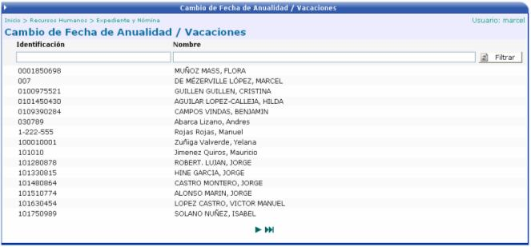
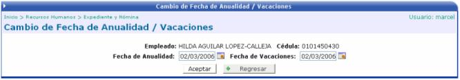
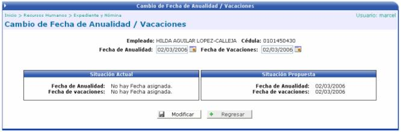

En esta opción es donde se puede modificar las fechas de anualidad y vacaciones para un empleado específico.

En la pantalla anterior se debe de hacer click sobre el registro deseado para que se muestre la siguiente pantalla que es en donde se debe de ingresar las nuevas fechas (anualidades / vacaciones)

Al presionar el botón de ACEPTAR, se mostrará la situación actual y la situación propuesta de las fechas de anualidad y vacaciones. Si se quiere guardar los cambios solamente se debe de presionar el botón de MODIFICAR.
